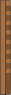
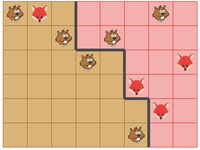
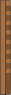
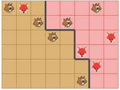

Élections
Cliquer sur les animaux qui sont à côté de lad'une frontière noire, pour la déplacer.
Votre objectif est que :
toutes les régions contiennent exactement animaux.
les régions contiennent au moins castors chacune
Cliquer sur les animaux qui sont à côté de lad'une frontière noire, pour la déplacer.
Votre objectif est que :
toutes les régions contiennent exactement animaux.
les régions contiennent au moins castors chacune


 


